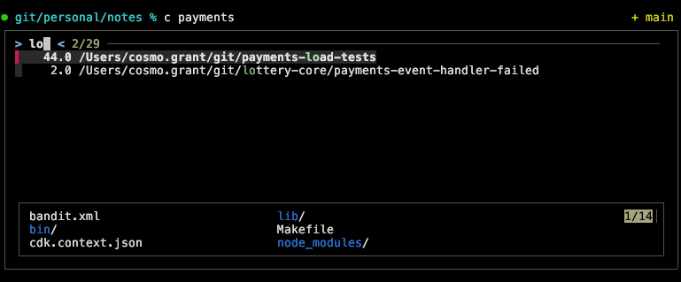
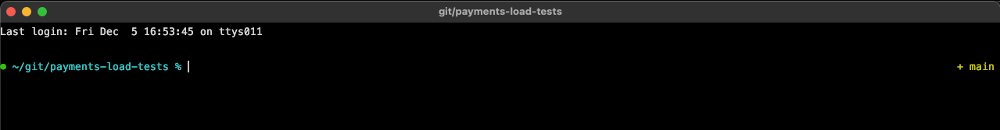
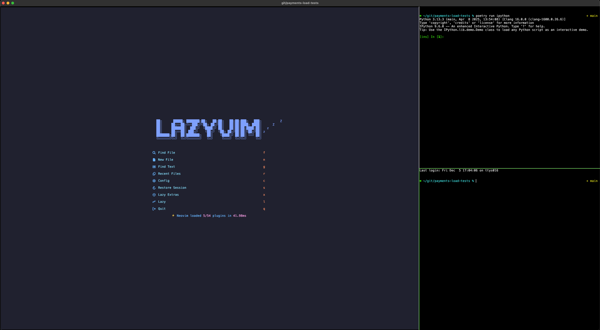

I use neovim in kitty. I often need to work across multiple projects. I used to just open new os windows, kitty tabs, or kitty windows ad hoc. No good: hard to find things, often in the wrong directory, often the wrong environment variables, clashing neovim instances, and so on.
There must be a better way!
Here’s what I’ve settled on.
I use one os window per project.
I open a new os window via, say, c payments.
That calls
c () {
zi "$1" || return
kitty @ launch --type os-window --cwd current --os-window-title $(sed "s;$HOME/;;" <<< "$PWD") /bin/zsh
z - >/dev/null
}defined in my functions.zsh.
zi is zoxide’s interactive cd,
so I get a menu like

I select my target project via fzf and hit enter.
(The || return is so that I can safely bail by hitting escape instead.)
kitty then launches zsh in a new os window.
The working directory is the selected project
(--cwd current).
So is the window’s title, but with the pointless /Users/cosmo.grant prefix removed
(the sed).

And I’m off to the races.
(Implementation detail:
zi changes the working directory of the shell where I run c.
That’s so --cwd current makes the new os window open at the selected project.
z - >/dev/null then quietly changes back to whatever it was before.)
In addition, in my kitty.conf I have:
map kitty_mod+enter new_window_with_cwd
map kitty_mod+t new_tab_with_cwdso my working directory remains the project root when I open more kitty windows and tabs, and also
enabled_layouts tall:bias=70;full_size=1;mirrored=false,allso that by default I keep a big window (bias=70) on the left.
My setup often ends up something like:

nvim in the big window, and two shells alongside.
To switch between projects, I cycle through the os windows using ⌘+`, looking at the window titles. It would be nicer to select a window using fzf, but I normally only have a few windows open, so cycling is nice enough.